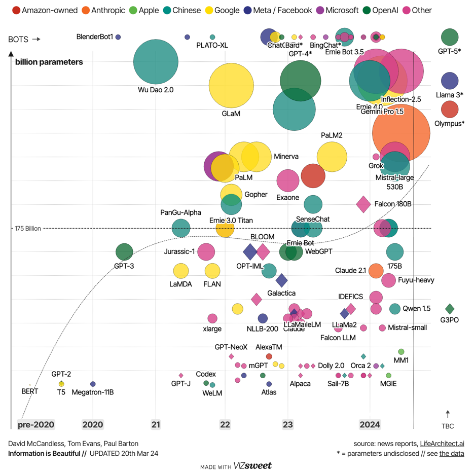
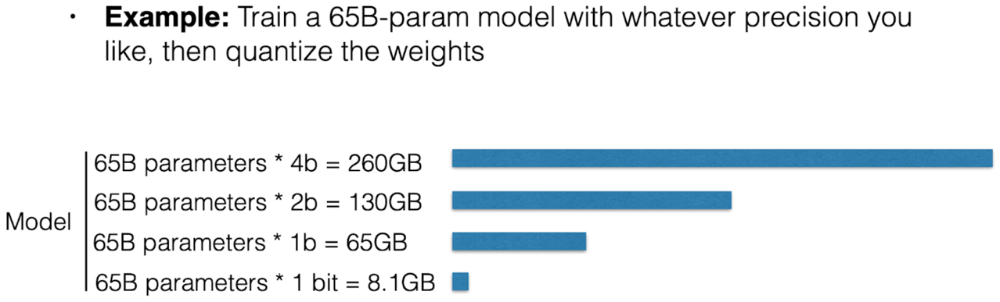

Advanced machine learning
Model compression and Mixture-of-Experts
Alex Avdiushenko
April 23, 2025
Lecture Plan
- Quantization and Q-LoRA
- Pruning
- Distillation
- Sparse Mixture of Experts
Motivation for model compression
Motivation for model compression
- LLM models are more and more massive
- One week of ChatGPT usage ~= all the training cost
- How can we cheaply, efficiently, and equitably deploy them without sacrificing performance?
- Model compression
- Quantization: keep the model the same but reduce the number of bits
- Pruning: remove parts of a model while retaining performance
- Distillation: train a smaller model to imitate the bigger model
Why is it possible to remove part of a big model?
In short: we don’t need all the parameters for the inference, but we need them for training.
We know for sure that half the stocks in our portfolio are worthless — the only problem is, we just don't know which half!
Post-Training Quantization

Int8 Quantization
- Absolute Maximum (absmax) quantization:
- This scales inputs to [-127, 127]
For 1d array [ 0.5, 20, -0.0001, -0.01, -0.1 ]
- Maximum entry is 20
- round(127/20 * [ 0.5, 20, -0.0001, -0.01, -0.1 ]) -> [ 3, 127, 0, 0, -1 ]
Layer-by-Layer Quantization-Aware Distillation
- Initialize the quantized network with the same architecture as the original
- Train each layer of the quantized network to mimic the output of its full-precision counterpart
Q-LoRA
- Can train a 65B model on a 48GB GPU!
Pruning
Remove parameters from the model after training
Pruning vs Quantization
- Quantization: no parameters are changed, up to $k$ bits of precision
- Pruning: a number of parameters are set to zero, the rest are unchanged
Magnitude Pruning
[See et al. 2016], [Han et al. 2015]
- Zero out the X% of parameters with the least magnitude
- A type of unstructured pruning

Graph showing the BLEU score versus percentage of parameters pruned
Structured Pruning
- Remove entire components
- The remaining components aren’t pruned
Pruning with only Forward Passes
- Structured pruning of big models requires a lot of memory
- Can we avoid using gradients?
- Idea:
- Measure the performance of a model with different modules masked
- Learn the impact of each module mask via regression
Distillation
Train one model (the “student”) to replicate the behavior of another model (the “teacher”)
Distillation vs Quantization vs Pruning
- Quantization: no parameters are changed, up to k bits of precision
- Pruning: a number of parameters are set to zero, the rest are unchanged
- Distillation: ~all parameters are changed
DistilBERT
- https://arunm8489.medium.com/understanding-distil-bert-in-depth-5f2ca92cf1ed
- Uses half the layers and 60% of total parameters
- Tricks:
- Initialize DistilBERT with alternating layers from BERT
- Use both supervised and distillation-based losses
- Supervised loss doesn’t help much
- Add cosine similarity of hidden state vectors between teacher and student
Performance comparison between models
A Toolkit for Synthetic Data Generation
- "Hard target distillation"
Mixture of Experts: Sparse Computation
- What happens when a scalar-tensor multiplication is zero?
- The result is guaranteed to be zero! No computation needed
-
This can happen in many parts of a model:
- Single rows in a matrix multiply → optimized by GPU
- Larger tensors → sparse MoE models
- Whole models in an ensemble → just don’t use that model
$0 \cdot [a, b, c] = [0, 0, 0]$
Sparsely Gated Mixture of Experts Layer
- Select a subset of FFNs to actually execute
$$ G(x) = \text{softmax}(\text{keep\_top\_k}(f_\text{gating}(x), k)) $$
$$ \text{keep\_top\_k}(v, k)_i = \begin{cases} v_i & \text{if } v_i \text{ is in the top k elements of } v \\ -\infty & \text{otherwise} \end{cases} $$
Understanding Mixtral-8x7b
The SMoE (Sparse-Mixture-of-Experts) MLP is Mixtral's distinct feature. It is the reason for its exceptional performance at low compute cost.
- SMoEs trade high parameter count for computational efficiency by using multiple layers (experts) but only executing a few per input
- The gating mechanism uses a learned linear layer to score each expert, and the top $k$ experts are selected for computation
- The weighted summation only needs to occur over the chosen top experts, saving computation
Summary
-
Quantization and Q-LoRA
- Quantization reduces the precision of model parameters (e.g., Int8) to save memory and computational resources
- Q-LoRA allows fine-tuning large models (e.g., 65B) on resource-constrained hardware by using 4-bit quantization
- May introduce small accuracy loss if precision is too low
-
Pruning
- Pruning removes less significant parameters, reducing model size and computation
- Magnitude pruning zeros out the lowest magnitude parameters, while structured pruning removes entire components
- Structured pruning requires careful tuning to avoid significant performance drops
-
Distillation
- Distillation trains a smaller model (student) to imitate a larger model (teacher), retaining most of its performance
- DistilBERT is an example, achieving comparable results to BERT with fewer parameters
- Involves some performance trade-offs depending on task complexity
-
Sparse Mixture of Experts (MoE)
- Sparse MoE only activates a subset of experts (layers) for each input, drastically reducing computation
- Mixtral-8x7b uses SMoE for efficient computation with high performance
- Requires a gating mechanism to determine which experts to use for each input
- What else to look at? Scientific knowledge distillation from deep learning models